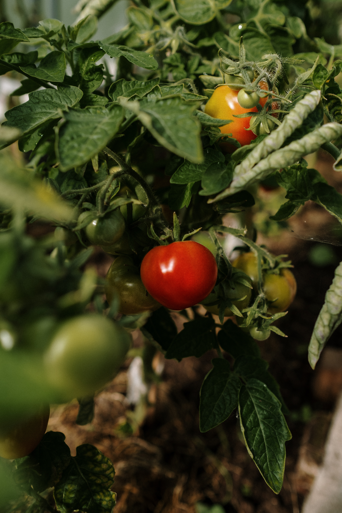
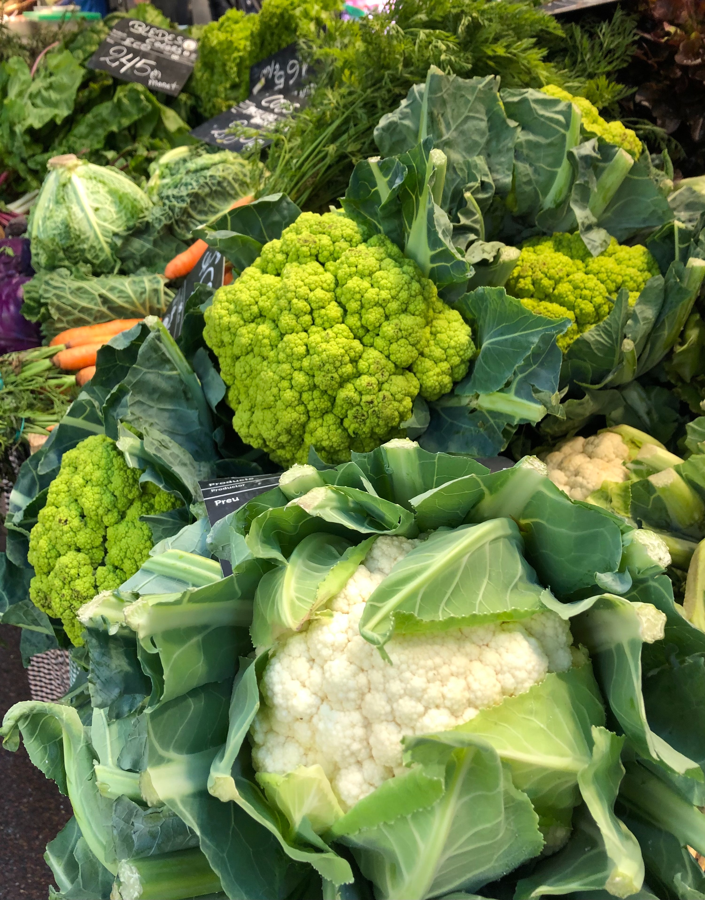
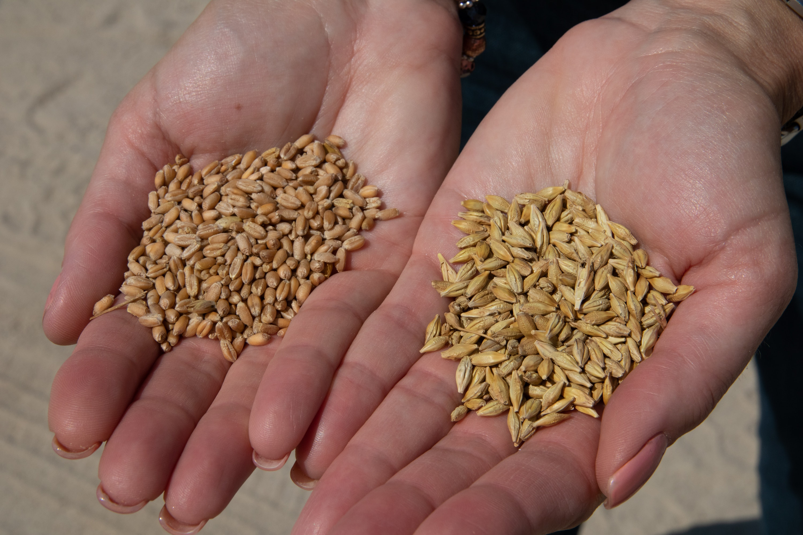
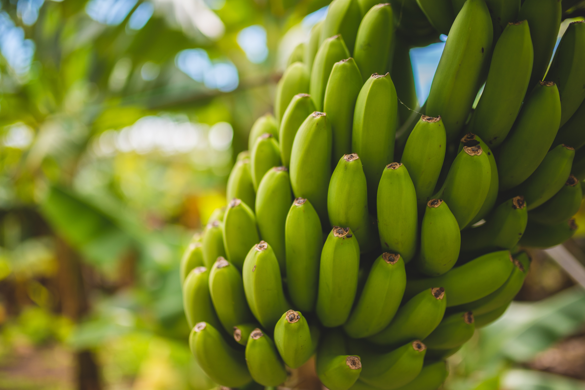
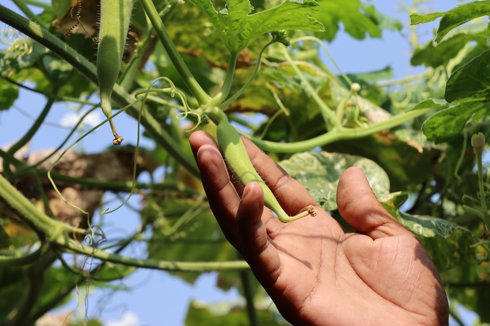

SUMMER SEASON

SWEET CORN
In kharif season, crop is sown in month of May end to June corresponding with the onset of monsoon. Spring crops are sown during late February to end of march. Plantation of baby corn can be done all the year round, except December and January. Kharif and rabi season are best for sweet corn sowing.

CARROT
August-September is best time for sowing local (desi) varieties of carrots whereas October-November month is ideal for European varieties. Use row to row spacing of 45 cm and plant to plant spacing of 7.5 cm. For sowing use dibbling method and also use broadcasting method.

TOMATO
The best time for tomato cultivation in the summer season will be May- July. In summer season artificial hormone application not necessary but fruit set to increase two times as well as yield due to hormone application. You may also check the Urban Farming Techniques.
WINTER

CAULIFLOWER
It requires cool moist climate. The early varieties may tolerate higher temperature and long days. This can be grown in plains during September to February. Deep loamy soils with a pH range of 5.5 to 6.6 with higher organic matter content and good drainage are suited for cauliflower cultivation.

POTATO
In plains of Haryana, Punjab, Uttar Pradesh, Bihar and West Bengal spring crop is sown in January while the main crop in the 1st week of October. In the states of Madhya Pradesh, Maharashtra and Karnataka the kharif crop is sown by end of June while rabi crop is sown from mid of October-November.

WHEAT
What is the duration of winter wheat?
Winter wheat is planted from 20 September to 10 October, and harvested from 25 June to 30 June, with yield advantage of 2.0–2.5 t ha−1 in comparison with spring wheat. With the replacement of spring wheat by winter wheat, maize yield also increased around 750 kg ha−1 owing to the early harvesting of winter wheat.
MONSOON SEASON

BANANA
Four months of monsoon (June to September) with an average 650-750 mm. rainfall are most important for vigorous vegetative growth of banana. At higher altitudes, banana cultivation is restricted to a few varieties like 'Hill banana”.

OKRA
In north it is cultivated in rainy and spring season. In rainy season, it is sown during June-July and for spring season it is cultivated in February - March. Row to row spacing should be 45 cm is recommended and plant to plant distance is 15-20 cm
GINGER
The planting season for ginger is from March-April, with the onset of the monsoon. The crop duration is generally around 8-9 months (April/May to December/ January). Ginger is planted in rows, 30 cm apart at distances of 20-25 cm within the row.